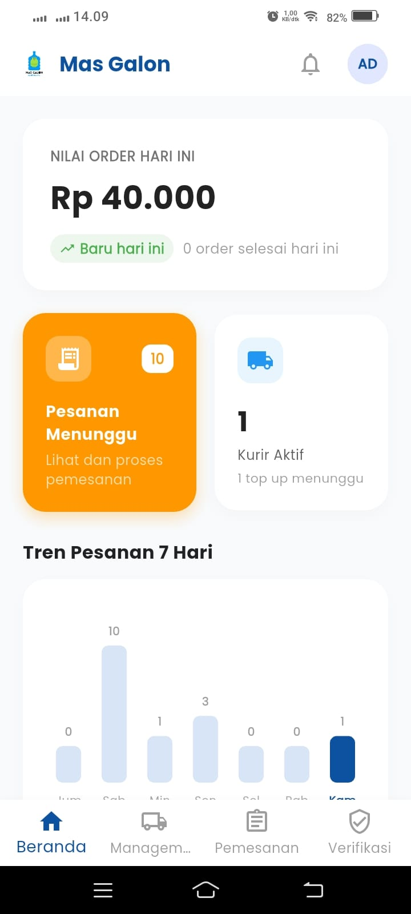

Pesan Air Galon & Gas LPG Kini Lebih Praktis!
Nikmati kemudahan memesan kebutuhan air galon dan tabung gas menggunakan sistem Abunemen Saldo Prabayar. Dilengkapi dengan pelacakan kurir real-time dan optimasi rute untuk pengiriman yang super cepat.

Pilih Aplikasi Sesuai Kebutuhan Anda
Kami menyediakan dua aplikasi khusus untuk memudahkan interaksi antara pelanggan dan tim operasional.
Mas Galon (Customer)
Aplikasi utama untuk warga perumahan. Dapatkan kemudahan memesan air galon dan gas dalam hitungan detik tanpa perlu keluar rumah atau repot mencari uang pas.
- Sistem Saldo Prabayar: Isi saldo abunemen sekali, pesan berkali-kali.
- Lacak Kurir Aktif: Pantau posisi kurir pengantar di peta real-time secara presisi.
- Chat Langsung: Hubungi kurir langsung dari dalam aplikasi jika ada instruksi khusus.
- Notifikasi Push: Terima pembaruan status pesanan mulai dari diproses hingga sampai depan rumah.
Mas Galon Admin & Kurir
Satu aplikasi dengan dua peran pintar (Role-based Portal) untuk mengelola seluruh ekosistem bisnis air galon dan gas secara digital, transparan, dan terstruktur.
- Manajemen Admin: Atur produk, kelola harga/stok, daftarkan kurir baru, dan verifikasi bukti pembayaran top-up saldo customer.
- Optimasi Rute Kurir (TSP): Urutkan rute pengantaran secara otomatis agar hemat bensin dan waktu menggunakan algoritma Nearest Neighbor.
- Navigasi Peta (OpenStreetMap): Panduan arah pengantaran interaktif langsung di dalam aplikasi untuk meminimalisir salah alamat.
- Bukti Foto Pengiriman: Ambil dan unggah foto penyerahan pesanan ke Supabase Storage sebagai bukti sah pengiriman selesai.
Fitur-Fitur Unggulan Mas Galon
Didukung oleh teknologi modern untuk memberikan pengalaman pengiriman terbaik.
Sistem Saldo Abunemen
Bebas repot menyiapkan uang kembalian. Customer dapat melakukan top-up saldo via transfer bank dan diverifikasi langsung oleh Admin.
Live Tracking Kurir
Integrasi GPS real-time memetakan koordinat kurir ke Supabase Database, memungkinkan pelanggan memantau posisi pengantaran di peta.
Rute Pengantaran Optimal (TSP)
Algoritma khusus (Nearest Neighbor TSP) menyusun urutan alamat pengantaran kurir secara otomatis agar jarak tempuh lebih efisien.
Chat Real-time In-App
Komunikasi lancar antara kurir dan customer berkat fitur chat bawaan yang terintegrasi dengan upload lampiran foto.
Notifikasi Instan (FCM)
Menerima push notification instan (Firebase Cloud Messaging) tentang status pesanan baru, top-up sukses, dan konfirmasi barang.
Bukti Kirim Digital
Setiap pesanan yang selesai wajib menyertakan bukti foto barang yang diterima, langsung disimpan aman di Supabase Storage.
Cara Instalasi File APK
Karena aplikasi Mas Galon didistribusikan langsung dalam format APK (belum di Google Play Store), ikuti 4 langkah mudah berikut untuk memasangnya di smartphone Android Anda:
Download File APK
Klik tombol download di atas untuk mengunduh file Mas_Galon.apk atau
Mas_Galon_Admin.apk ke memori smartphone Anda.
Aktifkan Sumber Tidak Dikenal
Jika muncul peringatan keamanan, buka Pengaturan → Keamanan → Aktifkan opsi "Instal Aplikasi dari Sumber Tidak Dikenal" (atau berikan izin pada browser Chrome/File Manager untuk menginstal APK).
Instal APK
Buka folder Downloads menggunakan File Manager, ketuk file APK yang baru diunduh, lalu pilih Instal.
Aplikasi Siap Digunakan!
Buka aplikasi Mas Galon di handphone Anda, masuk menggunakan akun Anda atau daftarkan diri, dan mulai nikmati layanannya!
Aman untuk Digunakan
File APK yang diunduh dari link rilis resmi GitHub kami terjamin aman dari malware dan bebas dari modifikasi berbahaya. Privasi Anda adalah prioritas utama.
Pertanyaan yang Sering Diajukan
Ada pertanyaan seputar layanan Mas Galon? Temukan jawabannya di sini.
Anda dapat mentransfer dana ke nomor rekening bank milik toko yang tertera di menu Top-up aplikasi Customer. Setelah transfer berhasil, unggah foto bukti transfer Anda di aplikasi. Admin toko akan melakukan verifikasi dan saldo Anda akan bertambah seketika secara otomatis disertai dengan notifikasi.
Biaya pengiriman ditentukan oleh Admin berdasarkan dua jenis metode pengiriman: Normal (pengantaran terjadwal rutin/keliling dengan tarif lebih murah) dan Fast Delivery (pengantaran langsung setelah pemesanan dengan tarif instan).
Demi menjaga keamanan wilayah pengiriman dan kredibilitas operasional, pendaftaran akun kurir dikontrol secara ketat. Admin toko akan memasukkan data identitas lengkap kurir seperti plat nomor kendaraan, STNK, KTP, dan kapasitas muatan sebelum akun kurir aktif dan dapat digunakan untuk login.
Aplikasi Kurir mengirimkan pembaruan koordinat GPS secara real-time ke database Supabase selama status pesanan adalah "Diantar". Aplikasi Customer kemudian memuat koordinat tersebut dan menggambarkannya di peta interaktif berbasis OpenStreetMap sehingga Anda tahu persis posisi kurir saat menuju rumah Anda.